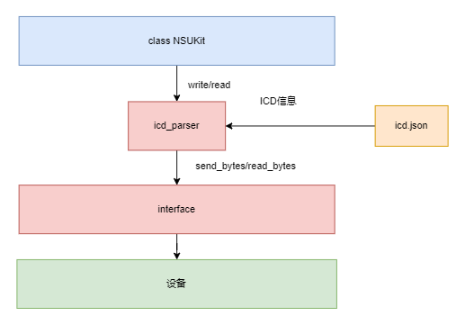
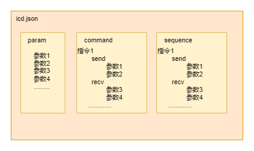
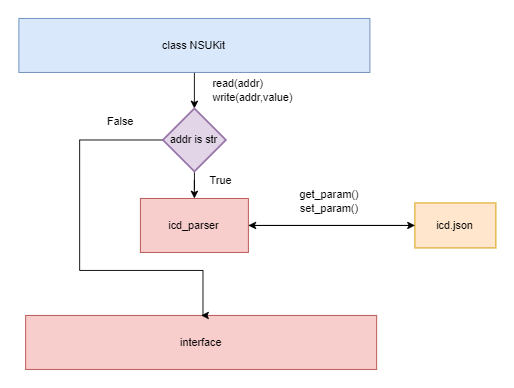
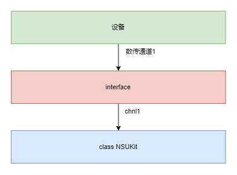
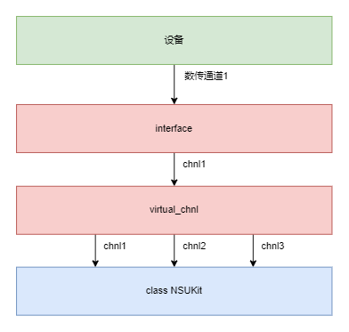

- 待办事项:
- 自定义处理层
icd_paresr
icd_paresr：指令处理中间件，用来使用约定式的icd指令
 icd_parser结构
icd.json
 icd.json文件格式{
"param": {
"参数1": ["参数1", "数据类型", "数据值"],
"参数2": ["参数2", "数据类型", "数据值"],
"参数3": ["参数3", "数据类型", "数据值"]
},
"command":{
"指令1": {
"send": [
"参数1",
"参数2",
["参数4", "数据类型", "数据值"]
],
"recv": [
"参数3"
]
},
"指令2": {
"send": [
"参数1",
"参数2",
["参数4", "数据类型", "数据值"]
],
"recv": [
"参数3"
]
}
},
"sequence": {
"指令3": [
"参数",
["参数", "数据类型", "数据值"]
]
}
}
config(self, **kwargs):
from nsukit import *
param = {
'tcp_cmd': {
"port": 5001,
"check_recv_head": False,
"icd_path": "icd文件路径"
}
}
nsukit = NSUKit(TCPCmdUItf, TCPStreamUItf)
nsukit.link_cmd(target='127.0.0.1', **param)
 get_param/set_param调用流程
get_param(self, param_name: str, default=0, fmt_type=int):
from nsukit import *
param = {
'tcp_cmd': {
"port": 5001,
"check_recv_head": False,
"icd_path": "icd文件路径"
}
}
nsukit = NSUKit(TCPCmdUItf, TCPStreamUItf)
nsukit.link_cmd(target='127.0.0.1', **param)
nsukit.read("参数1")
set_param(self, param_name: str, value, fmt_type=int):
from nsukit import *
param = {
'tcp_cmd': {
"port": 5001,
"check_recv_head": False,
"icd_path": "icd文件路径"
}
}
nsukit = NSUKit(TCPCmdUItf, TCPStreamUItf)
nsukit.link_cmd(target='127.0.0.1', **param)
nsukit.write(addr="参数1", value=1)
nsukit.write(addr="参数1", value=1, execute=False)
nsukit.write(addr="指令1", value=123)
virtual_chnl
virtual_chnl：虚拟通道中间件
虚拟通道主要用于：当设备只有1个数传通道，但想分开传输多路数据时所使用
virtual_chnl未开启时
 虚拟通道未开启时数据流的流程图举例说明：
花园需要浇水，每种花需要浇不同的水，且每种水不相容。现在只有一个水管（1个数传通道）
当我用水管进行浇水时，我需要一个挡板把水管中的不同的水分开进行使用
virtual_chnl开启时
 虚拟通道开启时数据流的流程图举例说明：(还是上边的例子)
花园需要浇水，每种花需要浇不同的水，且每种水不相容。现在只有一个水管（1个数传通道）
现在我买了一台机器，这台机器上有很多出水口，并且机器可以自动把每种水自动分开
这时我只需要使用机器上对应出水口的水去浇特定的花就可以了